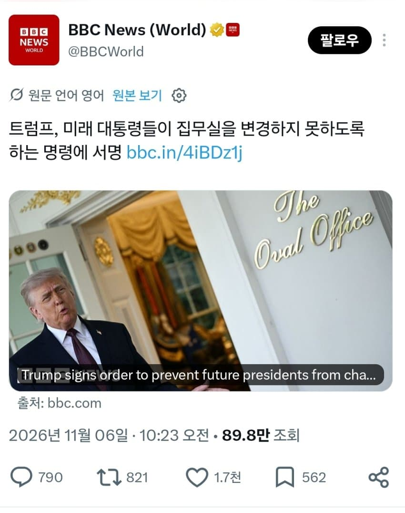
ㅋㅋㅋㅋ
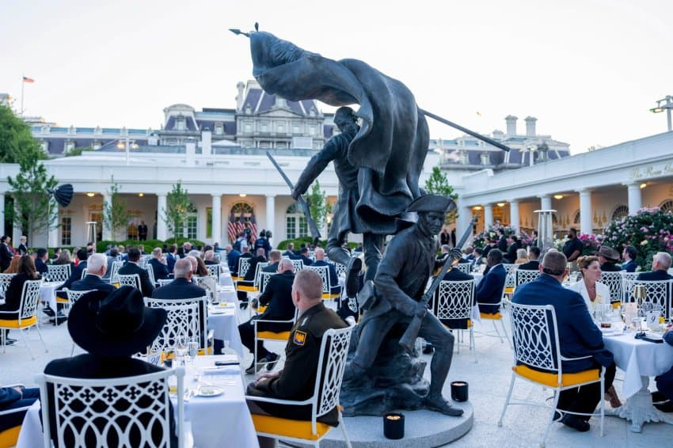
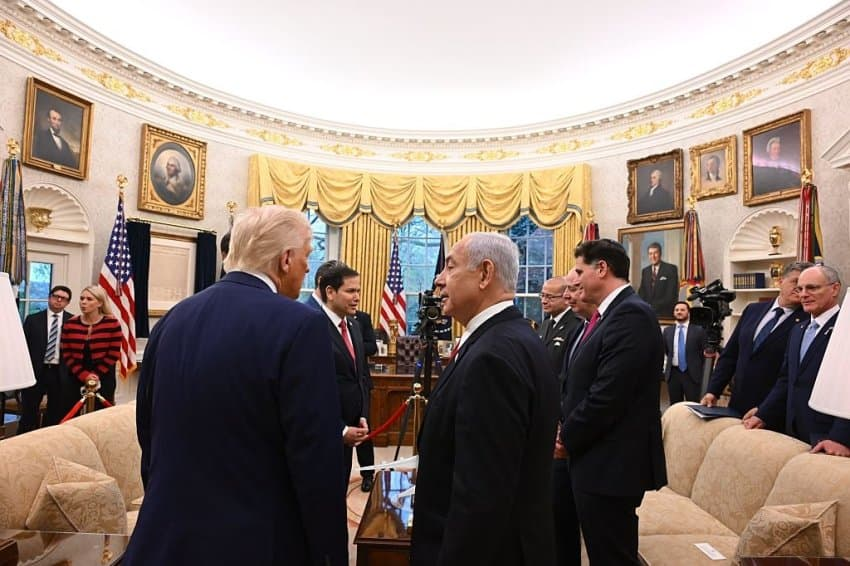
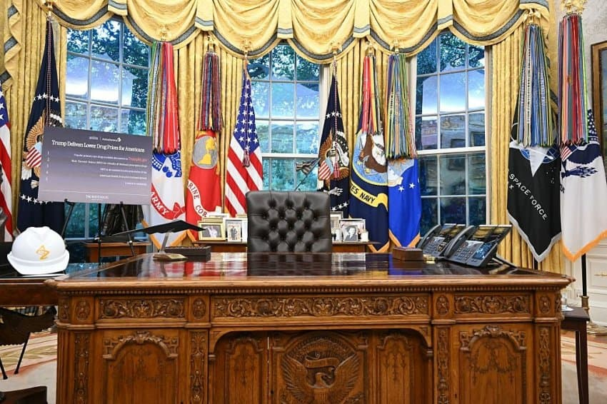
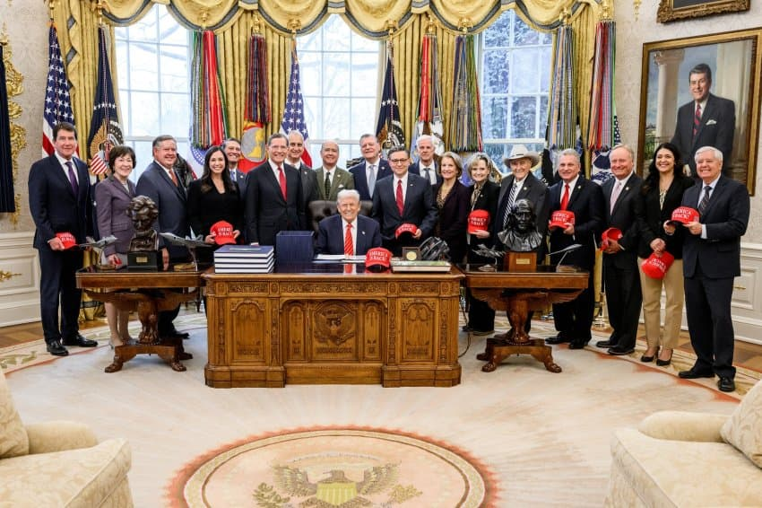
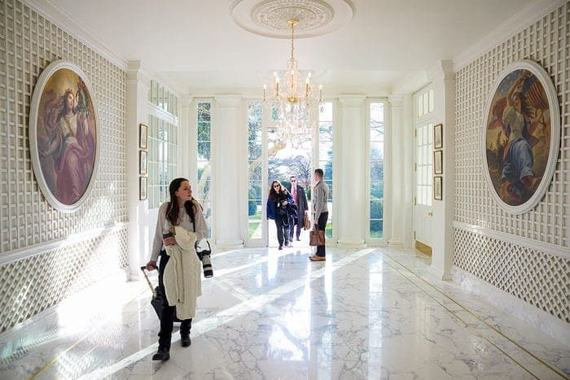
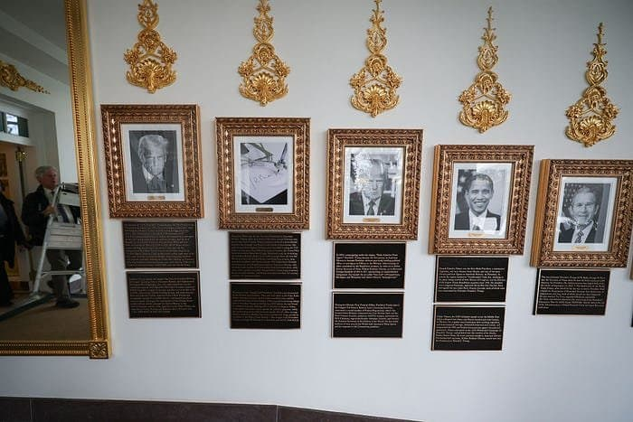
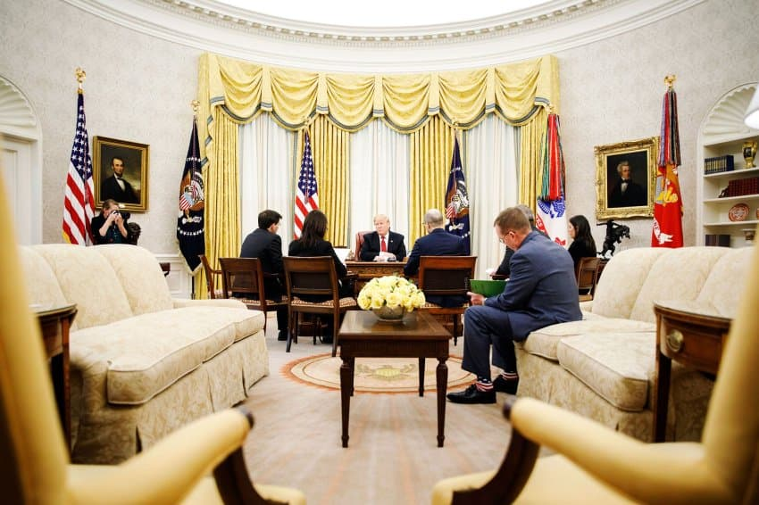
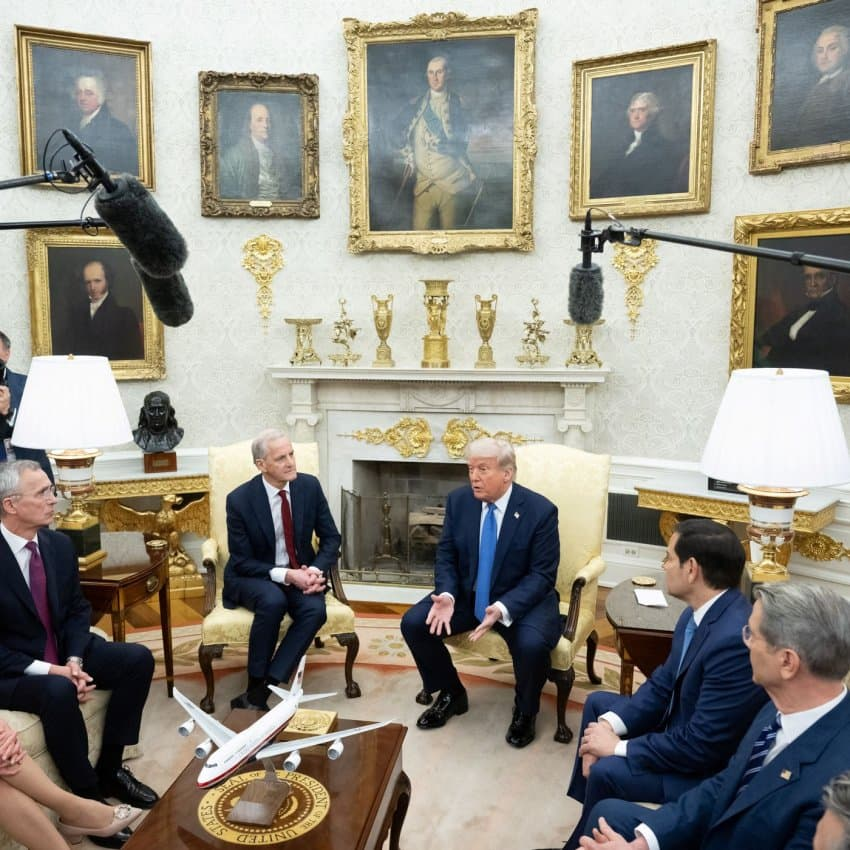
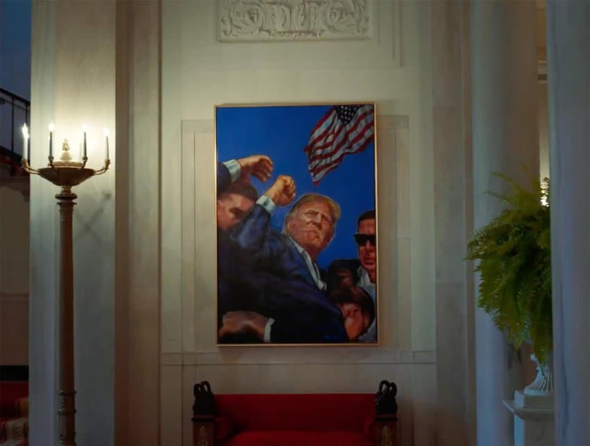
삐까번쩍
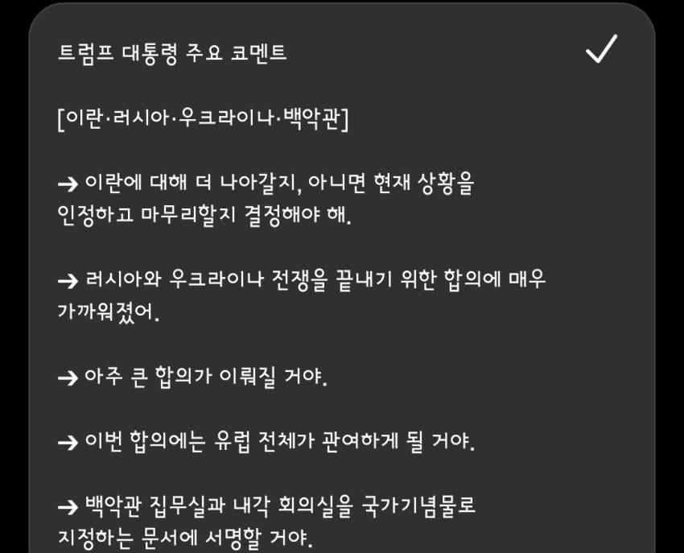
트럼프 대통령 주요 코멘트
[이란·러시아·우크라이나·백악관]
➔ 이란에 대해 더 나아갈지, 아니면 현재 상황을 인정하고 마무리할지 결정해야 해.
➔ 러시아와 우크라이나 전쟁을 끝내기 위한 합의에 매우 가까워졌어.
➔ 아주 큰 합의가 이뤄질 거야.
➔ 이번 합의에는 유럽 전체가 관여하게 될 거야.
➔ 백악관 집무실과 내각 회의실을 국가기념물로 지정하는 문서에 서명할 거야.
- dc official App
- 트럼프 ㄹㅈㄷ네 ㅋㅋㅋ차기 대통령이 집무실 리모델링 하면 쳐들어온데 ㅋㅋ
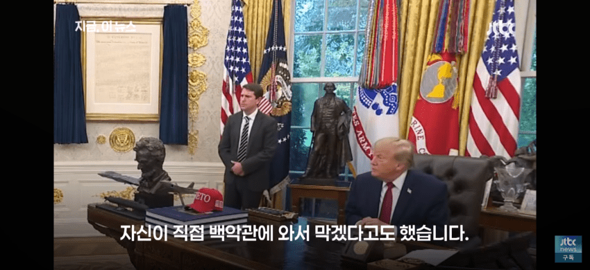
- dc official App